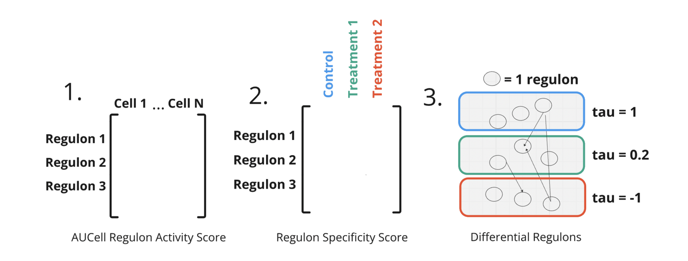

FOX: Functional OMIC Xploration of Gene Regulatory Networks
{kind=link}
Installation
To install the FOX package, run the following command:
pip install -i https://test.pypi.org/simple/ FOX==0.0.1
This will install FOX from the Test PyPI repository. Once installed, you can start using the package in your Python projects. FOX is a highly modular and flexible methodology for analyzing and comparing gene-regulatory networks, especially in single-cell gene expression data. It integrates several advanced tools, including SCENIC, NMF, and Kendall’s Tau, to provide deep insights into gene regulation. FOX can be used to visualize, compare, and analyze the structure and activity of gene regulatory networks under different conditions.
Key Features
Layer Comparison: Compare gene regulatory layers across multiple conditions using dimensionality reduction techniques like NMF (Non-negative Matrix Factorization).
Gene Activity Visualization: Visualize the results of gene activity analysis in both 2D and 3D embeddings with customized plotting and color mappings.
Reproducibility Analysis: FOX includes methods for assessing the reproducibility of gene-regulatory network structures across different experiments or conditions.
SCENIC Integration: FOX uses SCENIC in combination with AUCell to calculate the activity of each regulon in single-cell data, providing insights into gene regulation.
Modular Design: The core methodology is designed to be easily extendable, making it possible to incorporate additional tools like WGCNA and other network analysis techniques.
Broad Applicability: FOX can be used with a variety of different gene network libraries making it a very versatile form of analysis.
Core Features and Functions
Comparison of Gene Regulatory Layers
The compareLayers function allows you to compare two gene regulatory layers (e.g., control vs treatment) based on distance, visualizing the differences in a scatter plot.
It integrates NMF-based dimensionality reduction to plot the relative activity of genes across conditions.
Embedding and Analysis
NMF Transformation: FOX employs NMF to reduce the gene-regulatory data into a 2D space, making it easier to visualize the underlying structure of the networks.
3D Embedding: It constructs 3D embeddings using Kendall’s Tau to represent the relationships between conditions and regulons.
Global Structure Construction
The create_global_tree function builds a hierarchical tree structure of the regulatory network, which can be used to assess the overall network structure and its consistency across conditions.
Statistical Analysis and Visualization
Kendall’s Tau: Computes the correlation between conditions and provides insights into the strength and direction of gene activity.
Component Analysis: Generate heatmaps to visualize factor contributions and the relationships between regulatory factors under different conditions.
Cluster Analysis
FOX uses KMeans clustering to group gene activity data, providing a way to identify clusters of genes that behave similarly across conditions.
Quadrant Visualization: Draw quadrants in 2D plots to divide and analyze clusters based on median values.